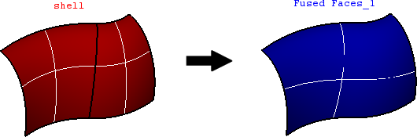

cfdmsh 4.0 documentation
cfdmsh 4.0 documentation cfdmsh 4.0 documentation


Creates a single face from a shell.
This function first generates a surface mesh of the input shell, then use mesh nodes to create a "smoothing surface". The last step is to relimitate this surface with the input shell boundary wire.
def FuseShellFaces( shell = None, np = 400, strat = "rigid", curv = True, add = True, infa = False, dim = 2 ):

| Name | Description | Type | GUI selection [?] | Selection by name [?] | Recursive [?] | Default value |
|---|---|---|---|---|---|---|
| shell | The shell to fuse. | Shell | yes | yes | yes | [None] |
| np | See here. In this case, the number of point is approximatively respected. |
Integer | - | - | - | 400 |
| strat | The strategy. If equals "flex", the function tries to insert smooth transitions between sub-faces of the input shell (the boundary wire is then modified). Equals "rigid" otherwise (necessitates the input sub-faces to be as tangential as possible). | String | - | - | - | "rigid" |
| curv | See here. In this case, applies only for the boundary wire reconstruction when strat equals "flex". |
Boolean | - | - | - | True |
| add | See here. | Boolean | - | - | - | True |
| infa | See here. | Boolean | - | - | - | False |
| dim Value [?] | single Value [?] | Type | Number | Name |
|---|---|---|---|---|
| 0 | - | Compound of Vertexes | 1 | "FusedShell (Vertexes)" |
| 2 | - | Face | 1 | "FusedShell" |
from cfdmsh import * # To adapt to the cfdmsh installation method
import math
vertex_1 = geompy.MakeVertex(0, 0, 0)
vertex_2 = geompy.MakeVertex(0, 0, 100)
vertex_3 = geompy.MakeVertex(0, -50, 0)
arc = geompy.MakeArcOfEllipse(vertex_1, vertex_2, vertex_3)
vertex_4 = geompy.MakeVertex(0, -150, 0)
vertex_5 = geompy.MakeVertex(0, 50, 0)
extrusion_1 = geompy.MakePrismDXDYDZ(vertex_4, 0, 0, 100)
extrusion_2 = geompy.MakePrismDXDYDZ(vertex_5, 0, 0, 100)
revolution_1 = geompy.MakeRevolution(arc, extrusion_1, 45*math.pi/180.0)
revolution_2 = geompy.MakeRevolution(arc, extrusion_2, 45*math.pi/180.0)
shell = geompy.MakeShell([revolution_1, revolution_2])
AddToStudy(shell, "shell")
fused_shell = FuseShellFaces(shell)
fused_shell_vertexes = FuseShellFaces(shell, dim = 0)
The shell should have only one boundary wire.
Also, to be fused efficiently, the shell faces should have reasonable aspect ratio and local curvature.
cfdmsh 4.0 documentation
tougeron-cfd.com © 2016